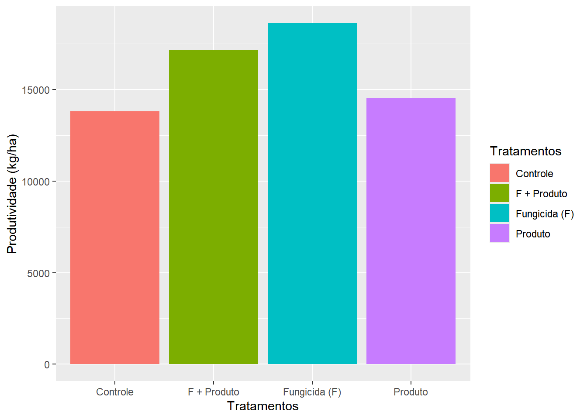
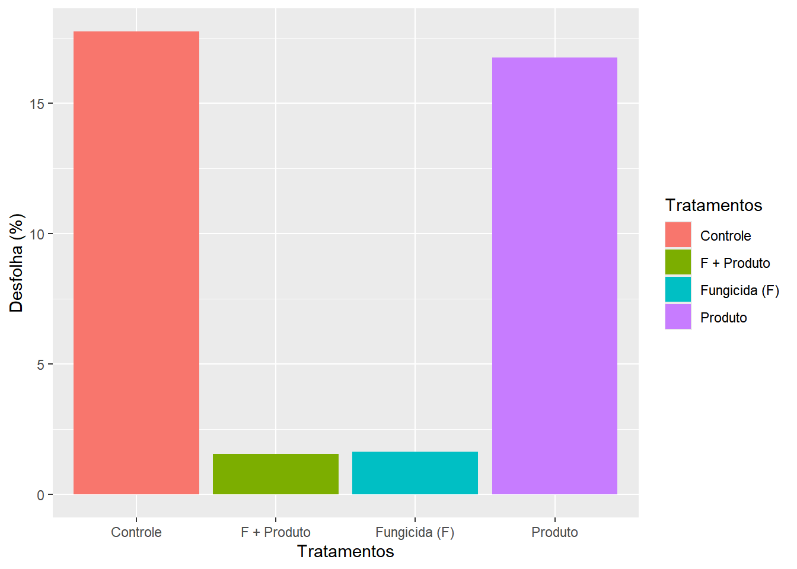
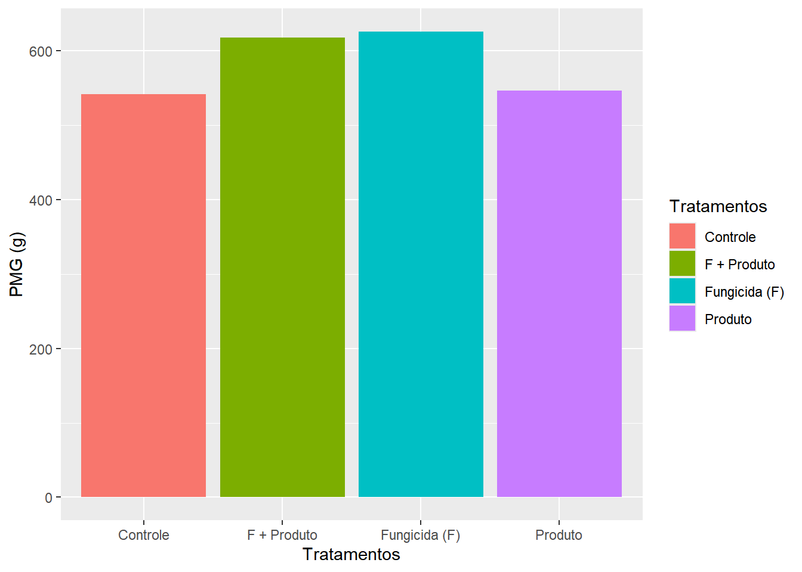
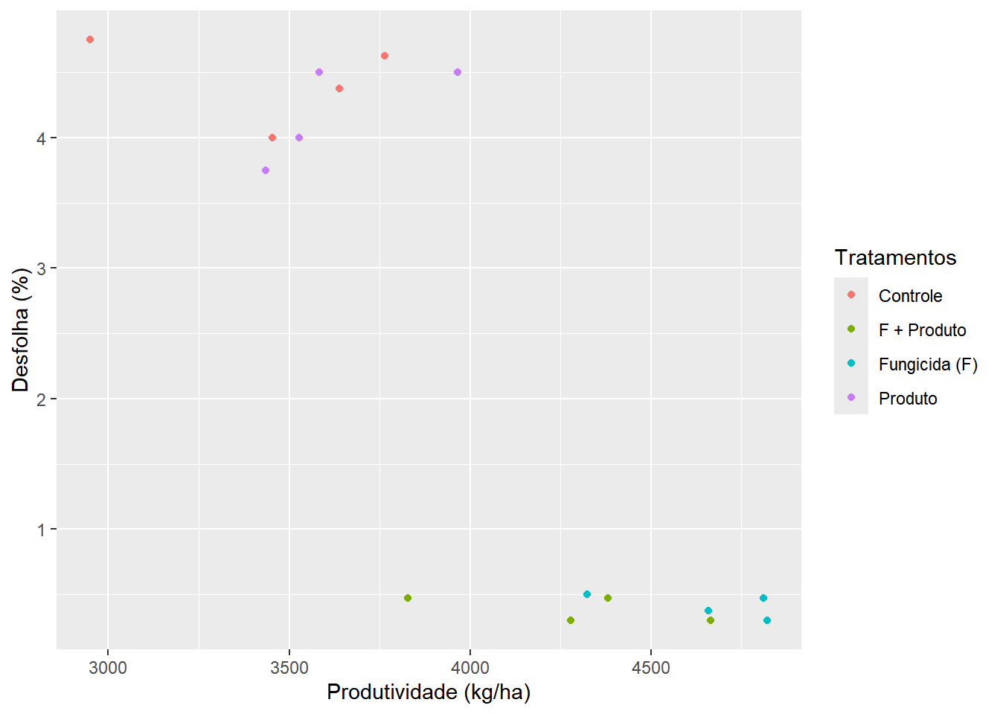
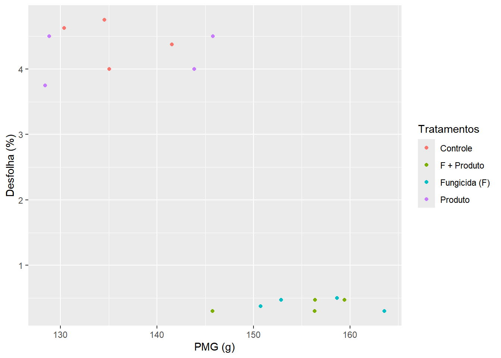
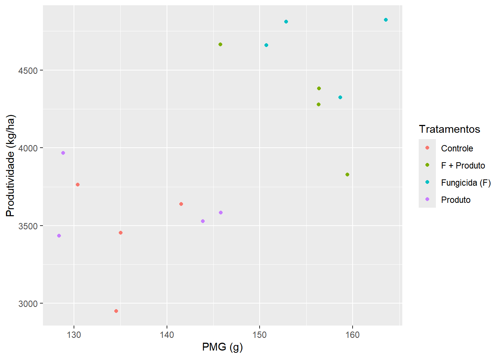

library(tidyverse)
library(gsheet)
library(patchwork)
library(ggplot2)
library(ggthemes)
library(performance)
library(emmeans)
library(multcomp)
library(multcompView)
library(MASS)
library(DHARMa)Pacotes usados para rodar os progamas para visualizar a produtividade o peso de mil grãos e desfolha do trabalho
Testes estatísticos e análises da produtividade peso de mil grãos e desfolha
prod <- gsheet2tbl("https://docs.google.com/spreadsheets/d/1D_tSkv6calLSIxxzwG_qiMH3cBlG1Y0B/edit?gid=123849322#gid=123849322")
aov_prod <- lm(`Produtividade (kg/ha)` ~ Tratamentos + Blocos,
data = prod)
anova(aov_prod)Analysis of Variance Table
Response: Produtividade (kg/ha)
Df Sum Sq Mean Sq F value Pr(>F)
Tratamentos 3 3797307 1265769 15.4828 0.0002909 ***
Blocos 1 173648 173648 2.1241 0.1729516
Residuals 11 899284 81753
---
Signif. codes: 0 '***' 0.001 '**' 0.01 '*' 0.05 '.' 0.1 ' ' 1check_normality(aov_prod)OK: residuals appear as normally distributed (p = 0.233).check_heteroscedasticity(aov_prod)OK: Error variance appears to be homoscedastic (p = 0.543).summary(aov_prod)
Call:
lm(formula = `Produtividade (kg/ha)` ~ Tratamentos + Blocos,
data = prod)
Residuals:
Min 1Q Median 3Q Max
-362.11 -174.03 -11.98 178.75 358.29
Coefficients:
Estimate Std. Error t value Pr(>|t|)
(Intercept) 3684.76 214.44 17.183 2.71e-09 ***
TratamentosF + Produto 836.33 202.18 4.137 0.00165 **
TratamentosFungicida (F) 1202.18 202.18 5.946 9.65e-05 ***
TratamentosProduto 176.42 202.18 0.873 0.40152
Blocos -93.18 63.93 -1.457 0.17295
---
Signif. codes: 0 '***' 0.001 '**' 0.01 '*' 0.05 '.' 0.1 ' ' 1
Residual standard error: 285.9 on 11 degrees of freedom
Multiple R-squared: 0.8154, Adjusted R-squared: 0.7482
F-statistic: 12.14 on 4 and 11 DF, p-value: 0.0005059medias_prod <- emmeans(aov_prod, ~ Tratamentos)
pwpm(medias_prod) Controle F + Produto Fungicida (F) Produto
Controle [3452] 0.0077 0.0005 0.8188
F + Produto -836 [4288] 0.3195 0.0327
Fungicida (F) -1202 -366 [4654] 0.0017
Produto -176 660 1026 [3628]
Row and column labels: Tratamentos
Upper triangle: P values adjust = "tukey"
Diagonal: [Estimates] (emmean)
Lower triangle: Comparisons (estimate) earlier vs. latercld(medias_prod, Letters = LETTERS) Tratamentos emmean SE df lower.CL upper.CL .group
Controle 3452 143 11 3137 3766 A
Produto 3628 143 11 3314 3943 A
F + Produto 4288 143 11 3973 4603 B
Fungicida (F) 4654 143 11 4339 4969 B
Confidence level used: 0.95
P value adjustment: tukey method for comparing a family of 4 estimates
significance level used: alpha = 0.05
NOTE: If two or more means share the same grouping symbol,
then we cannot show them to be different.
But we also did not show them to be the same. aov_des <- lm(`Desfolha (%)` ~ Tratamentos + Blocos,
data = prod)
anova(aov_des)Analysis of Variance Table
Response: Desfolha (%)
Df Sum Sq Mean Sq F value Pr(>F)
Tratamentos 3 61.357 20.4523 362.2971 2.84e-11 ***
Blocos 1 0.185 0.1853 3.2821 0.0974 .
Residuals 11 0.621 0.0565
---
Signif. codes: 0 '***' 0.001 '**' 0.01 '*' 0.05 '.' 0.1 ' ' 1check_normality(aov_des)OK: residuals appear as normally distributed (p = 0.480).check_heteroscedasticity(aov_des)OK: Error variance appears to be homoscedastic (p = 0.308).summary(aov_des)
Call:
lm(formula = `Desfolha (%)` ~ Tratamentos + Blocos, data = prod)
Residuals:
Min 1Q Median 3Q Max
-0.29313 -0.16063 -0.00187 0.16813 0.36062
Coefficients:
Estimate Std. Error t value Pr(>|t|)
(Intercept) 4.19687 0.17820 23.552 9.19e-11 ***
TratamentosF + Produto -4.05000 0.16801 -24.106 7.15e-11 ***
TratamentosFungicida (F) -4.02500 0.16801 -23.958 7.64e-11 ***
TratamentosProduto -0.25000 0.16801 -1.488 0.1648
Blocos 0.09625 0.05313 1.812 0.0974 .
---
Signif. codes: 0 '***' 0.001 '**' 0.01 '*' 0.05 '.' 0.1 ' ' 1
Residual standard error: 0.2376 on 11 degrees of freedom
Multiple R-squared: 0.99, Adjusted R-squared: 0.9864
F-statistic: 272.5 on 4 and 11 DF, p-value: 6.407e-11medias_des <- emmeans(aov_des, ~ Tratamentos)
pwpm(medias_des) Controle F + Produto Fungicida (F) Produto
Controle [4.437] <.0001 <.0001 0.4760
F + Produto 4.050 [0.387] 0.9988 <.0001
Fungicida (F) 4.025 -0.025 [0.412] <.0001
Produto 0.250 -3.800 -3.775 [4.187]
Row and column labels: Tratamentos
Upper triangle: P values adjust = "tukey"
Diagonal: [Estimates] (emmean)
Lower triangle: Comparisons (estimate) earlier vs. latercld(medias_des, Letters = LETTERS) Tratamentos emmean SE df lower.CL upper.CL .group
F + Produto 0.388 0.119 11 0.126 0.649 A
Fungicida (F) 0.412 0.119 11 0.151 0.674 A
Produto 4.188 0.119 11 3.926 4.449 B
Controle 4.438 0.119 11 4.176 4.699 B
Confidence level used: 0.95
P value adjustment: tukey method for comparing a family of 4 estimates
significance level used: alpha = 0.05
NOTE: If two or more means share the same grouping symbol,
then we cannot show them to be different.
But we also did not show them to be the same. aov_peso <- lm(`PMG (g)` ~ Tratamentos + Blocos,
data = prod)
anova(aov_peso)Analysis of Variance Table
Response: PMG (g)
Df Sum Sq Mean Sq F value Pr(>F)
Tratamentos 3 1518.01 506.00 14.8905 0.0003447 ***
Blocos 1 163.44 163.44 4.8098 0.0506917 .
Residuals 11 373.80 33.98
---
Signif. codes: 0 '***' 0.001 '**' 0.01 '*' 0.05 '.' 0.1 ' ' 1check_normality(aov_peso)OK: residuals appear as normally distributed (p = 0.131).check_heteroscedasticity(aov_peso)OK: Error variance appears to be homoscedastic (p = 0.244).summary(aov_peso)
Call:
lm(formula = `PMG (g)` ~ Tratamentos + Blocos, data = prod)
Residuals:
Min 1Q Median 3Q Max
-7.2892 -4.5045 0.6807 4.1570 7.5893
Coefficients:
Estimate Std. Error t value Pr(>|t|)
(Intercept) 128.237 4.372 29.331 8.52e-12 ***
TratamentosF + Produto 19.089 4.122 4.631 0.000727 ***
TratamentosFungicida (F) 21.063 4.122 5.110 0.000339 ***
TratamentosProduto 1.337 4.122 0.324 0.751751
Blocos 2.859 1.303 2.193 0.050692 .
---
Signif. codes: 0 '***' 0.001 '**' 0.01 '*' 0.05 '.' 0.1 ' ' 1
Residual standard error: 5.829 on 11 degrees of freedom
Multiple R-squared: 0.8181, Adjusted R-squared: 0.752
F-statistic: 12.37 on 4 and 11 DF, p-value: 0.0004667medias_peso <- emmeans(aov_peso, ~ Tratamentos)
pwpm(medias_peso) Controle F + Produto Fungicida (F) Produto
Controle [135] 0.0034 0.0016 0.9876
F + Produto -19.09 [154] 0.9622 0.0058
Fungicida (F) -21.06 -1.97 [156] 0.0027
Produto -1.34 17.75 19.73 [137]
Row and column labels: Tratamentos
Upper triangle: P values adjust = "tukey"
Diagonal: [Estimates] (emmean)
Lower triangle: Comparisons (estimate) earlier vs. latercld(medias_peso, Letters = LETTERS) Tratamentos emmean SE df lower.CL upper.CL .group
Controle 135 2.91 11 129 142 A
Produto 137 2.91 11 130 143 A
F + Produto 154 2.91 11 148 161 B
Fungicida (F) 156 2.91 11 150 163 B
Confidence level used: 0.95
P value adjustment: tukey method for comparing a family of 4 estimates
significance level used: alpha = 0.05
NOTE: If two or more means share the same grouping symbol,
then we cannot show them to be different.
But we also did not show them to be the same. Gráficos para visualizar a interação entre produtividade peso de mil grãos e desfolha
prod |>
ggplot(aes(Tratamentos, `Produtividade (kg/ha)`,
fill = Tratamentos))+
geom_col()
prod |>
ggplot(aes(Tratamentos, `Desfolha (%)`,
fill = Tratamentos))+
geom_col()
prod |>
ggplot(aes(Tratamentos, `PMG (g)`,
fill = Tratamentos))+
geom_col()
prod |>
ggplot(aes(`Produtividade (kg/ha)`, `Desfolha (%)`,
color = Tratamentos))+
geom_point()
prod |>
ggplot(aes(`PMG (g)`, `Desfolha (%)`,
color = Tratamentos))+
geom_point()
prod |>
ggplot(aes(`PMG (g)`, `Produtividade (kg/ha)`,
color = Tratamentos))+
geom_point()